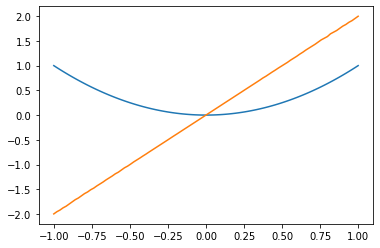

2022년 파이썬 입문 기말고사
ref: 기말고사 풀이 링크
0. imports
아래코드를 이용하여 numpy, matplotlib, pandas를 import하라.
1. 기본문제 (50점)
(1) 도함수를 구하는 함수 derivate를 선언하라. 이 함수를 이용하여 \(f(x)=x^2\)의 그래프와 \(f'(x)=2x\)의 그래프를 \(x \in (-1,1)\)의 범위에서 그려라.

(2) 적당한 클래스 정의하여 인스턴스 a를 만들고 print(a)의 출력결과가 본인의 학번이 나오도록 하라.
## 출력결과
2022-43052(3) for문이 실행될때마다 [묵,찌,빠] 중에 하나를 내며 빠를 누적 3회 낼경우 for문이 멈추는 이터레이터를 생성하라.
(나의풀이)
class Klass: # 빠를 누적 3회 낼 경우 for문이 멈추는 이터레이터를 만들자.
def __init__(self):
self.candidate = ['묵','찌','빠']
self.n = 0
def __iter__(self):
return self
def __next__(self):
action = np.random.choice(self.candidate)
if action == '빠':
self.n += 1
print(action,self.n)
if self.n == 3:
print('빠가 누적3회 나와서 for문을 멈춥니다.')
raise StopIteration
else:
return action
else:
return action(모범답안)
class Klass:
def __init__(self):
self.candidate = ['묵','찌','빠']
self.dic = {'묵':0,'찌':0,'빠':0}
def __iter__(self):
return self
def __next__(self):
action = np.random.choice(self.candidate)
self.dic[action] += 1
if self.dic['빠'] == 3:
print('빠가 3번 누적되어 for문을 멈춥니다.')
raise StopIteration
else:
return action(4)-(6)
(4) 위의 클래스를 수정하여 아래와 같이 GS25에서 새로운 인스턴스가 생성될때마다
GS25의 점포수가 ?개로 늘었습니다.라는 메시지가 출력되도록 하라.
(5) 함수 come를 인스턴스 메소드로 정의하라. 이 메소드가 실행될때마다 각 점포의 손님 인스턴스 변수 number_of_guests와 클래스변수 total_number_of_guests를 1씩 증가시키고 아래의 메시지를 출력하라.
새로운 손님이 오셨습니다!
GS25를 방문한 총 손님수는 n명입니다.
현재 GS25 점포를 방문한 손님수는 m명입니다. (6) 새로운 클래스메서드 show를 만들고 아래와 같은 메시지를 출력하도록 하라.
GS25의 점포수: ??
GS25를 방문한 총 손님수: ??(사용예시) (4)-(6)을 모두 적용한 경우 사용예시는 아래와 같다.
class GS25:
n = 0
total_numer_of_guests = 0
def __init__(self):
self.number_of_guests = 0
GS25.n += 1
print('GS25의 점포수가 {}개로 늘었습니다.'.format(GS25.n))
def come(self):
GS25.total_number_of_guests += 1
self.number_of_guests += 1
print('새로운 손님이 오셨습니다.')
print('GS25를 방문한 총 손님 수는 {}명입니다.'.format(GS25.total_number_of_guests))
print('현재 GS25 점포를 방문한 손님수는 {}명입니다.'.format(self.number_of_guests))
@classmethod
def show(cls):
print('GS25의 점포수:{}'.format(cls.n))
print('GS를 방문한 총 손님 수: {}'.format(cls.total_number_of_guests))(풀이시작)
class GS25:
n=0
total_number_of_guests = 0
def __init__(self):
self.number_of_guests = 0
GS25.n += 1
print('GS25의 점포수가 {}개로 늘었습니다.'.format(GS25.n))
def come(self):
self.number_of_guests += 1
GS25.total_number_of_guests += 1
print('새로운 손님이 오셨습니다!')
print('GS25를 방문한 총 손님수는 {}명입니다.'.format(GS25.total_number_of_guests))
print('현재 GS25 점포를 방문한 손님수는 {}명입니다.'.format(self.number_of_guests))
@classmethod
def show(cls):
print('GS25의 점포수: {}'.format(cls.n))
print('GS25를 방문한 총 손님수: {}'.format(cls.total_number_of_guests))(7) __eq__는 연산 == 를 재정의하는 메소드이다. 클래스 RPS_BASE를 상속하여 새로운 클래스 RPS5를 만들라. 연산 ==를 재정의하여 RPS5의 두 인스턴스의 action이 같은 경우 true를 리턴하는 기능을 구현하라.
hint: Appendix를 참고할 것
hint: RPS5의 선언부분은 아래와 같은 형태를 가지고 있다.
hint: RPS5클래스의 사용예시는 아래와 같다.
(풀이시작)
(8) __gt__는 연산 > 를 재정의하는 메소드이다. 클래스 RPS_BASE를 상속하여 새로운 클래스 RPS6를 만들라. 연산 >를 재정의하여 RPS6의 두 인스턴스 a,b의 action이 각각 (‘가위’,‘보’), (‘바위’,‘가위’), (‘보’,‘바위’) 인 경우 true를 리턴하는 기능을 구현하라.
hint: Appendix를 참고할 것
hint: RPS6클래스의 사용예시는 아래와 같다.
(9)-(10)
아래와 같은 데이터프레임을 선언하고 물음에 답하라.
np.random.seed(43052)
df=pd.DataFrame({'type':np.random.choice(['A','B'],100), 'score':np.random.randint(40,95,100)})
df| type | score | |
|---|---|---|
| 0 | B | 45 |
| 1 | A | 40 |
| 2 | B | 79 |
| 3 | B | 46 |
| 4 | B | 57 |
| ... | ... | ... |
| 95 | B | 69 |
| 96 | A | 71 |
| 97 | A | 93 |
| 98 | A | 63 |
| 99 | A | 82 |
100 rows × 2 columns
(9) type==’A’의 평균score를 구하는 코드를 작성하라.
(10) type==’A’의 평균score보다 같거나 큰 값을 가지는 행을 출력하라.
2. 가위, 바위, 보 하나빼기 (150점)
(1) 플레이어A는 (가위,가위) 중 하나를 선택할 수 있고 플레이어B는 (가위,바위) 중 하나를 선택할 수 있다. 각 플레이어는 각 패 중 하나를 랜덤으로 선택하는 액션을 한다고 가정하자. 아래에 해당하는 확률을 시뮬레이션을 이용하여 추정하라.
- 플레이어A가 승리할 확률:
- 플레이어B가 승리할 확률:
- 플레이어A와 플레이어B가 비길 확률:
hint: 50% 확률로 b가 승리하고 50% 확률로 비긴다.
(2) 문제 (1)과 같이 아래의 상황을 가정하자.
| 플레이어A | 플레이어B | |
|---|---|---|
| 각 플레이어가 낼 수 있는 패 (candidate) | (가위,가위) | (가위,바위) |
| 각 패를 선택할 확률 (prob) | (0.5,0.5) | (0.5,0.5) |
각 플레이어는 아래와 같은 규칙으로 가위바위보 결과에 따른 보상점수를 적립한다고 하자. - 승리: 보상점수 2점 적립 - 무승부: 보상점수 1점 적립 - 패배: 보상점수 0점 적립
100번째 대결까지 시뮬레이션을 시행하고 플레이어B가 가위를 낼 경우 얻은 보상점수의 총합과 바위를 낼 경우 얻은 보상점수의 총합을 각각 구하라. 플레이어B는 가위를 내는것이 유리한가? 바위를 내는것이 유리한가?
hint: 플레이어B는 바위를 내는 것이 유리하다.
hint: 플레이어B가 100번중에 49번 가위를 내고 51번 바위를 낸다면 플레이어B가 적립할 보상점수는 각각 아래와 같다. - 가위를 내었을 경우: 49 * 1 = 49점 - 바위를 내었을 경우: 51 * 2 = 102점 - 총 보상점수 = 49점 + 102점 = 151점
(3) (2)에서 얻은 데이터를 학습하여 플레이어B가 “가위” 혹은 “바위” 를 선택할 확률을 매시점 조금씩 조정한다고 가정하자. 구체적으로는 현재시점까지 얻은 보상점수의 비율로 확률을 결정한다. 예를들어 플레이어B가 100회의 대결동안 누적한 보상점수의 총합이 아래와 같다고 하자.
- 가위를 내었을 경우 보상점수 총합 = 50점
- 바위를 내었을 경우 보상점수 총합 = 100점
그렇다면 플레이어B는 각각 (50/150,100/150) 의 확률로 (가위,바위) 중 하나를 선택한다. 101번째 대결에 플레이어B가 가위를 내서 비겼다면 이후에는 (51/151,100/151) 의 확률로 (가위,바위) 중 하나를 선택한다. 102번째 대결에 플레이어B가 바위를 내서 이겼다면 이후에는 각각 (51/153,102/153) 의 확률로 (가위,바위) 중 하나를 선택한다. 이러한 상황을 요약하여 표로 정리하면 아래와 같다.
| 시점 | 플레이어B가 가위를 냈을 경우 얻은 점수 총합 | 플레이어B가 바위를 냈을 경우 얻은 점수 총합 | t+1시점에서 플레이어B가 (가위,바위)를 낼 확률 |
|---|---|---|---|
| t=100 | 50 | 100 | (50/150, 100/150) |
| t=101 | 51 | 100 | (51/151, 100/151) |
| t=102 | 51 | 102 | (51/153, 102/153) |
이러한 방식으로 500회까지 게임을 진행하며 확률을 수정하였을 경우 501번째 대결에서 플레이어B가 (가위,바위)를 낼 확률은 각각 얼마인가?
hint: 시간이 지날수록 플레이어B는 (가위,바위)중 바위를 내는 쪽이 유리하다는 것을 알게 될 것이다.
앞으로 아래와 같은 용어를 사용한다. - (정의) 어떠한 플레이어가 양손 중 하나를 선택하는 확률을 데이터를 바탕으로 매 순간 업데이트 한다면 그 플레이어는 “학습모드 상태이다”고 표현한다. - (정의) 반대로 어떠한 플레이어가 양손 중 하나를 항상 동일한 확률로 낸다면 그 플레이어는 “학습모드 상태가 아니다”라고 표현한다.
(4) 새로운 두명의 플레이어C와 플레이어D를 만들어라. 두 플레이어는 모두 동일하게 (가위,바위) 중 하나를 선택할 수 있다. 두 명의 플레이어는 100번째 대결까지는 두 가지 패중 하나를 랜덤하게 선택하고 101번째 대결부터 500번째 대결까지는 문제(3)의 플레이어B와 같은 방식으로 확률을 업데이트 하여 두 가지 패를 서로 다른 확률로 낸다고 하자. 즉 100번째 대결까지는 두 플레이어가 모두 학습모드 상태가 아니고 101번째부터 500번째 대결까지는 두 플레이어가 모두 학습모드 상태이다. 500번째 대결까지의 학습이 끝났을 경우 플레이어 C와 플레이어D가 각 패를 낼 확률은 각각 얼마인가?
| 시점 | 플레이어C가 (가위,바위)를 낼 확률 | 플레이어D가 (가위,바위)를 낼 확률 | 비고 |
|---|---|---|---|
| t <= 100 | (1/2, 1/2) | (1/2, 1/2) | 양쪽 플레이어 모두 학습모드가 아님 |
| t <= 500 | 대결 데이터를 학습하여 수정한 확률 | 대결 데이터를 학습하여 수정한 확률 | 양쪽 플레이어 모두 학습모드임 |
hint: 시간이 지날수록 두 플레이어 모두 바위를 내는 쪽이 유리하다는 것을 알게 될 것이다.
(5) 새로운 플레이어 E와 F를 생각하자. 플레이어E와 플레이어F는 각각 (가위,바위) 그리고 (가위,보) 중 하나를 선택할 수 있다고 가정하자. 시뮬레이션 대결결과를 이용하여 아래의 확률을 근사적으로 추정하라.
- 플레이어E가 승리할 확률:
- 플레이어F가 승리할 확률:
- 플레이어E와 플레이어F가 비길 확률:
hint: 플레이어E가 가위를 낸다면 최소한 지지는 않기 때문에 플레이어E가 좀 더 유리한 패를 가지고 있다. 따라서 플레이어E의 결과가 더 좋을 것이다.
(6) (5)와 동일한 두 명의 플레이어E, F를 생각하자. 두 플레이어는 100회까지는 랜덤으로 자신의 패를 선택한다. 그리고 101회부터 500회까지는 플레이어F만 데이터로 부터 학습을 하여 수정된 확률을 사용한다. 500번의 대결이 끝나고 플레이어F가 (가위,보)를 선택하는 확률이 어떻게 업데이트 되어있는가?
| 시점 | 플레이어E가 (가위,바위)를 낼 확률 | 플레이어F가 (가위,보)를 낼 확률 | 비고 |
|---|---|---|---|
| t <= 100 | (1/2, 1/2) | (1/2, 1/2) | 양쪽 플레이어 모두 학습모드가 아님 |
| t <= 500 | (1/2, 1/2) | 데이터를 학습하여 수정한 확률 | 플레이어E는 학습모드아님 / 플레이어F는 학습모드 |
hint: 플레이어F는 보를 내는 것이 낫다고 생각할 것이다. (가위를 내면 지거나 비기지만 보를 내면 지거나 이긴다.)
(7) (6)번의 플레이어E와 플레이어F가 500회~1000회까지 추가로 게임을 한다. 이번에는 플레이어E만 데이터로부터 학습한다. 1000회까지 대결을 끝낸 이후 플레이어E가 (가위,바위)를 내는 확률은 어떻게 업데이트 되었는가?
| 시점 | 플레이어E가 (가위,바위)를 낼 확률 | 플레이어F가 (가위,보)를 낼 확률 | 비고 |
|---|---|---|---|
| t <= 100 | (1/2, 1/2) | (1/2, 1/2) | 양쪽 플레이어 모두 학습모드가 아님 |
| t <= 500 | (1/2, 1/2) | 데이터를 학습하여 수정한 확률 | 플레이어E는 학습모드아님 / 플레이어F는 학습모드 |
| t <= 1000 | 데이터를 학습하여 수정한 확률 | t=500시점에 업데이트된 확률 | 플레이어E는 학습모드 / 플레이어F는 학습모드아님 |
hint: 플레이어F는 보를 내도록 학습되어 있다. 따라서 플레이어E가 바위를 내면 지고 가위를 내면 이길것이다. 따라서 플레이어E는 가위가 유리하다고 생각할 것이다.
(8) (7)번의 플레이어E와 플레이어F가 1000회~30000회까지 추가로 게임을 한다. 이번에는 플레이어F만 데이터로부터 학습한다. 30000회까지 대결을 끝낸 이후 플레이어F가 (가위,보)를 내는 확률은 어떻게 업데이트 되었는가?
| 시점 | 플레이어E가 (가위,바위)를 낼 확률 | 플레이어F가 (가위,보)를 낼 확률 | 비고 |
|---|---|---|---|
| t <= 100 | (1/2, 1/2) | (1/2, 1/2) | 양쪽 플레이어 모두 학습모드가 아님 |
| t <= 500 | (1/2, 1/2) | 데이터를 학습하여 수정한 확률 | 플레이어E는 학습모드아님 / 플레이어F는 학습모드 |
| t <= 1000 | 데이터를 학습하여 수정한 확률 | t=500시점에 업데이트된 확률 | 플레이어E는 학습모드 / 플레이어F는 학습모드아님 |
| t <= 30000 | t=1000시점에 업데이트된 확률 | 데이터를 학습하여 수정한 확률 | 플레이어E는 학습모드아님 / 플레이어F는 학습모드 |
hint: 플레이어F는 원래 보가 유리하다고 생각하여 보를 자주 내도록 학습되었다. 하지만 플레이어E가 그러한 플레이어F의 성향을 파악하고 가위를 주로 내도록 학습하였다. 플레이어F는 그러한 플레이어E의 성향을 다시 파악하여 이번에는 가위을 자주 내는 것이 유리하다고 생각할 것이다.
(9) 플레이어E와 플레이어F의 대결기록을 초기화 한다. 이번에는 플레이어F가 항상 (3/4)의 확률로 가위를 (1/4)의 확률로 보를 낸다고 가정한다. 플레이어E는 100번의 대결까지는 랜덤으로 (가위,바위)중 하나를 내고 101번째 대결부터 1000번째 대결까지는 대결 데이터를 학습하여 수정한 확률을 사용한다고 하자. 1000번째 대결이후에 플레이어E가 (가위,바위)를 내는 확률이 어떻게 업데이트 되어있는가?
| 시점 | 플레이어E가 (가위,바위)를 낼 확률 | 플레이어F가 (가위,보)를 낼 확률 | 비고 |
|---|---|---|---|
| t <= 100 | (1/2, 1/2) | (3/4, 1/4) | 양쪽 플레이어 모두 학습모드가 아님 |
| t <= 1000 | 데이터를 학습하여 수정한 확률 | (3/4, 1/4) | 플레이어E는 학습모드 / 플레이어F는 학습모드 아님 |
(10) 플레이어E와 플레이어F의 대결기록을 초기화 한다. 이번에는 플레이어F가 항상 (2/3)의 확률로 가위를 (1/3)의 확률로 보를 낸다고 가정한다. 플레이어E는 100번의 대결까지는 랜덤으로 (가위,바위)중 하나를 내고 101번째 대결부터 1000번째 대결까지는 대결 데이터를 학습하여 수정한 확률을 사용한다고 하자. 1000번째 대결이후에 플레이어E가 (가위,바위)를 내는 확률이 어떻게 업데이트 되어있는가?
| 시점 | 플레이어E가 (가위,바위)를 낼 확률 | 플레이어F가 (가위,보)를 낼 확률 | 비고 |
|---|---|---|---|
| t <= 100 | (1/2, 1/2) | (2/3, 1/3) | 양쪽 플레이어 모두 학습모드가 아님 |
| t <= 1000 | 데이터를 학습하여 수정한 확률 | (2/3, 1/3) | 플레이어E는 학습모드 / 플레이어F는 학습모드 아님 |
Appendix
- 아래의 클래스를 참고하여 문제1,2을 풀어라. (5월25일 강의노트에 소개된 클래스를 약간 정리한 것) - 참고하지 않아도 감점은 없음
class RPS:
def __init__(self,candidate):
self.candidate = candidate
self.actions = list()
self.rewards = list()
self.prob = [0.5,0.5]
def __eq__(self,other): # 연산 == 를 재정의
return self.actions[-1] == other.actions[-1]
#note: 둘의 액션이 같으면 무승부
def __gt__(self,other): # 연산 > 를 재정의
pair = self.actions[-1], other.actions[-1]
return pair == ('가위','보') or pair == ('바위','가위') or pair == ('보','바위')
#note: 가위>보, 바위>가위, 보>가위
def __mul__(self,other):
# step1: 각자의 패를 선택
self.choose()
other.choose()
# step2: 승패 판단 + upate reward
if self == other: # 무승부일경우
self.rewards.append(1)
other.rewards.append(1)
elif self > other: # self의 승리
self.rewards.append(2)
other.rewards.append(0)
else: # other의 승리
self.rewards.append(0)
other.rewards.append(2)
# step3: update data
self.update_data()
other.update_data()
def update_data(self):
self.data = pd.DataFrame({'actions':self.actions, 'rewards':self.rewards})
def _repr_html_(self):
html_str = """
낼 수 있는 패: {} <br/>
데이터: <br/>
{}
"""
return html_str.format(self.candidate,self.data._repr_html_())
def choose(self):
self.actions.append(np.random.choice(self.candidate,p=self.prob))- 사용예시